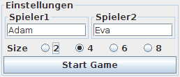
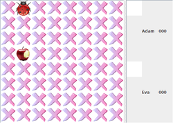

Jgspiel
Dieser Artikel wurde für die folgenden Ubuntu-Versionen getestet:
Ubuntu 14.04 Trusty Tahr
Zum Verständnis dieses Artikels sind folgende Seiten hilfreich:
Jgspiel ist ein Pairs-Spiel für zwei Personen. Die Spielfeldgröße kann maximal 64 Karten (8x8) betragen. Durch die Verwendung von Java kann es plattformübergreifend genutzt werden.
In den offiziellen Paketquellen sind zwei weitere Pairs-Spiele enthalten, die man aber beide nur alleine spielen kann: zum einen lmemory, zum anderen pairs für die Desktop-Umgebung KDE.
Voraussetzungen¶
Das Programm basiert auf Java. Wie man eine Laufzeitumgebung (JRE, ab Version 6) installiert, ist im Artikel Java/Installation beschrieben.
Online-Nutzung¶
Statt der nachfolgend beschriebenen Installation auf dem eigenen Rechner kann man auch Java Web Start für Jgspiel verwenden: jgspiel.jnlp  . Dann nutzt man automatisch immer die neueste Version.
. Dann nutzt man automatisch immer die neueste Version.
Installation¶
 Möchte man auch ohne Internetverbindung spielen können, kann man sich die Datei jgspiel.jar herunterladen und z.B. in den Ordner ~/bin/ speichern. Um es bei Ubuntu-Varianten mit einem Anwendungsmenü bequem aufrufen zu können, erstellt man sich mit einem Editor einen Programmstarter ~/.local/share/applications/jgspiel.desktop (Benutzername, Pfade und Dateinamen bitte anpassen) [1]:
Möchte man auch ohne Internetverbindung spielen können, kann man sich die Datei jgspiel.jar herunterladen und z.B. in den Ordner ~/bin/ speichern. Um es bei Ubuntu-Varianten mit einem Anwendungsmenü bequem aufrufen zu können, erstellt man sich mit einem Editor einen Programmstarter ~/.local/share/applications/jgspiel.desktop (Benutzername, Pfade und Dateinamen bitte anpassen) [1]:
[Desktop Entry] Name=Jgspiel Name[de]=Jgspiel Comment=Pairs (Memory-like) Comment[de]=Pairs (wie Memory) Exec=java -jar /home/BENUTZERNAME/bin/jgspiel.jar Icon=/home/BENUTZERNAME/Bilder/jgspiel_logo.png Terminal=false Type=Application Categories=Game; StartupNotify=false MimeType=application/x-java-archive;application/java-archive;application/x-jar;
Verwendung¶
 Falls man einen Programmstarter erstellt hat, erfolgt der Start [2] über den Eintrag "Spiele -> Jgspiel". Ansonsten startet man die Anwendung über ihren Namen bzw. im Terminal [3]:
java- jar /PFAD/ZUR/jpspiel.jar
 Beim Programmstart werden die Namen der beiden Mitspieler und die gewünschte Spielfeldgröße abgefragt (die leider eine feste Größe besitzt und nicht skalierbar ist). Das Ziel sollte bekannt sein: so viele Kartenpaare wie möglich sammeln, wobei jeder Spieler immer nur 2 Karten aufdecken darf. Nur wenn ein Paar gefunden wurde, bleibt dieses aufgedeckt und der jeweilige Spieler darf zwei weitere Karten umdrehen.
Möchte man eine neue Runde starten, beendet man Jgspiel und startet es erneut.
Problembehebung¶
Wenn man das Spiel über einen Dateimanager aufrufen möchte, erscheint unter Umständen eine Fehlermeldungen, man möge die Datei zuerst als ausführbar kennzeichnen. Am einfachsten erfolgt dies über folgenden Befehl im Terminal:
chmod u+x /PFAD/ZUR/jgspiel.jar
Falls im Kontextmenü  unter "Öffnen mit" ein Eintrag für Java fehlt, hilft dieser Tipp weiter.
unter "Öffnen mit" ein Eintrag für Java fehlt, hilft dieser Tipp weiter.
Infobox¶
| Jgspiel | |
| Genre: | Denkspiel (Gedächtnisleistung und Kombinationsvermögen) |
| Sprache: |   |
| Veröffentlichung: | ? |
| Entwickler: | homer65 (MyOggRadio ) |
| Systemvoraussetzungen: | - |
| Medien: | Download |
| Strichcode / EAN / GTIN: | - |
| Läuft mit: | Java |
 Programmübersicht
Programmübersicht- Erstellt mit Inyoka
-
 2004 – 2017 ubuntuusers.de • Einige Rechte vorbehalten
2004 – 2017 ubuntuusers.de • Einige Rechte vorbehalten
Lizenz • Kontakt • Datenschutz • Impressum • Serverstatus -
Serverhousing gespendet von